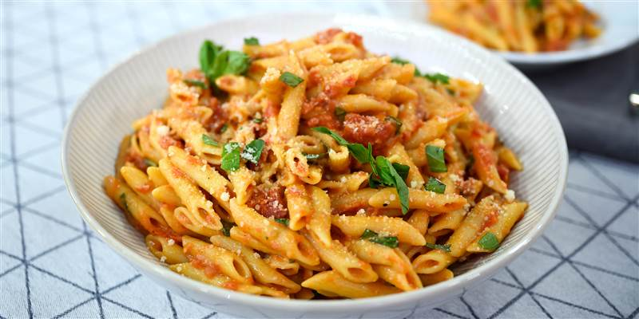

Excess Food
Quick Recipe
Pasta

Ingredients
- 225 gm pasta penne
- 4 cloves garlic
- 2 teaspoon basil
- 3 pinches salt
- 2 pinches powdered black pepper
- 2 red chilli
- 450 gm roma tomato
- 1/2 teaspoon chilli flakes
- 1 tablespoon parsley
- 1 1/2 tablespoon extra virgin olive oil
- 3 cup water
Methods
- Prepare the red sauce and boil the pasta. To prepare this mouth-watering and spicy pasta recipe, first you need to prepare the sauce for the pasta. For the same, heat oil in a pan over medium flame and add minced garlic along with chopped red chilli and red chili flakes in it. Stir and saute for 2 minutes. Take another pan, pour the water and bring it to a boil. Then, add pasta to the boiling water along with salt and oil, and cook the pasta for a few minutes. When its cooked, drain the extra water and transfer the pasta in another bowl.
- Cook tomatoes along with herbs for 10-12 minutes. Now, add the peeled tomatoes, basil and parsley in the pan. Mix all the ingredients well and let it simmer for 10 minutes until the sauce starts to thicken. When the sauce starts gaining consistency, put off the burner and add salt and black pepper powder to the sauce. Keep the sauce warm. Add the pasta over the warm sauce and toss with carefully.
- Pasta is ready to relish. Cook for a while and then serve the Red Sauce Pasta immediately. (Tip: If you are someone who likes the cheesy version of pasta then you can garnish the pasta with some grated Parmesan cheese and to make it more aromatic, you can dry roast a few basil leaves and crush it with some chilli flakes and oregano. This herb fusion will make your pasta even more delectable. Serve it with garlic bread and relish this delicious pasta recipe.)